BinderHub Snakemake 使用 mock-up#
I. Overview#
前言#
Depositar為得讓所儲存的資料集達成FAIR data(Findable, Accessible, Interoperable, Reusable)，引進了BinderHub來讓資料得以在內部進行運作驗證(interoperable)，而Snakemake的加入則是為了省去複雜的資料驗證程序，並讓資料更新可以只重新執行需要的部分，降低資源使用，而”省去複雜的資料驗證程序”的部分則可以彈性使用，讓使用者也可以以自己的資料去驗證實驗結果(Reusable)。
這份文件簡單的介紹了Snakemake的使用方式並模擬加入BinderHub
簡介#
snakemake 是一個處理工作流程的工具，透過與其他軟件搭配(ex: samtools, bwa …)或單純使用shell, python指令建立各種規則(rule)對資料進行更分析、產生結果報告，類似於Makefile，但有功能使用更使用者友善一些。
內容概述#
利用Snakemake來讓作者將其研究方法(分析順序)的Snakefile、script.sh、資料上傳至depositar，當其他使用者帶著自己的資料集來驗證時，上傳至binder中，在終端機中輸入”bash script.sh”，系統便會自動下載snakemake與snakedeploy或其他所需要的環境，並直接執行Snakefile，而根據不同需求，Snakefile可能會要取用到其他地方(ex: Github)的資源，或就在本地端執行即可，若想將資料的處理分為前置作業與資料分析，可使用多個Snakefile來達到多層次的工作流程。而Snakemake除了產生出工作流程後產生的成果外，也有內建的功能可以靠指令產生工作流程圖(DAG有向無環圖)或report(.zip,html…)。
II. Snakemake 基本教學#
mamba Setup#
(來源:安裝流程)
Linux 環境
$ curl -L https://github.com/conda-forge/miniforge/releases/latest/download/Mambaforge-Linux-x86_64.sh -o Mambaforge-Linux-x86_64.sh
$ bash Mambaforge-Linux-x86_64.sh
下載跟安裝Miniconda 3
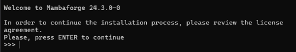
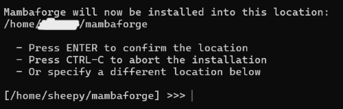
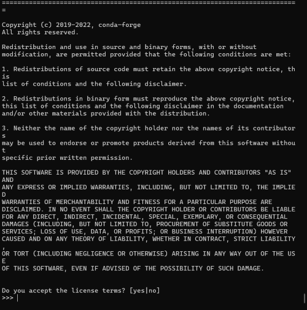
一直按Enter繼續
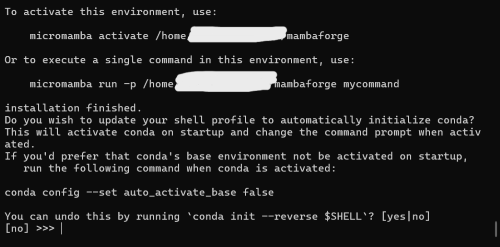
yes
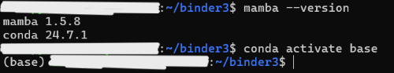
這樣就可以使用mamba了
環境設置#
# environment.yaml
name: environment # 環境名稱
channels:
- conda-forge
- bioconda # 生物信息學軟體包的 channel
dependencies: # 函式庫
- snakemake-minimal >=8.4.4 # 可強調版本
- python
- matplotlib
- pandas
- numpy
- plotly
- folium
- pip # 這裡是 Conda 自身的 pip 包
# 如果有需要從 PyPI 安裝的包，可以這樣放在 pip 下 (conda沒有的)
# - pip:
# - python_package_not_in_conda
劇本#
# script.sh
#!/bin/bash
# Check if Snakemake is installed, if not, install it
if ! command -v snakemake &> /dev/null
then
echo "Snakemake not found, installing..."
conda activate base
mamba create -c conda-forge -c bioconda --name snakemake snakemake snakedeploy -y
fi
# Initialize conda in the script
source $(conda info --base)/etc/profile.d/conda.sh
conda activate snakemake
# Run the Snakemake workflow
snakemake --cores all --use-conda
先確認目前有沒snakemake
-> 沒有就安裝
-> 有就啟動環境
因為在建立環境時會問y/n，所以加 -y 回答
if ! command -v snakemake &> /dev/null
then
echo "Snakemake not found, installing..."
# conda install -n base -c conda-forge mamba
conda activate base
mamba env create -n snakemake --file environment.yaml || mamba env update -n snakemake --file environment.yaml
# mamba create -c conda-forge -c bioconda -n snakemake snakemake
fi
ex2(視範例)的用法，不適下載snakemake與snakedeploy，而是安裝environment.yaml裡所需的環境，以 || 來判斷若已有環境，則看是否更新
rules#
規則範例:
from snakemake.utils import min_version
min_version("6.10.0")
rule all:
input:
directory("data"),
directory("report")
rule unzip_workflow:
input:
"workflow.zip"
output:
"workflow/Snakefile"
shell:
"unzip {input} -d ./"
rule unzip_file:
input:
"data.zip",
"workflow/Snakefile"
output:
directory("data"),
"workflow/new_snakefile"
shell:
'''
unzip {input[0]} -d {output[0]}
mv {input[1]} {output[1]}
'''
rule run_workflow:
input:
"workflow/new_snakefile"
output:
"fin_workflow"
shell:
'''
set +e
snakemake -s {input} --cores all --use-conda
set -e
touch fin_workflow
mv workflow/new_snakefile workflow/Snakefile
'''
rule generate_report:
input:
rules.run_workflow.output
output:
"report.zip"
shell:
'''
snakemake -s workflow/Snakefile --report {output}
rm -rf {input}
'''
rule unzip_report:
input:
rules.generate_report.output
output:
directory("report")
shell:
"unzip {input} -d {output}"
rule all 是 $ snakemake 的時候跑的
形成下圖流程圖 (順序由上而下)
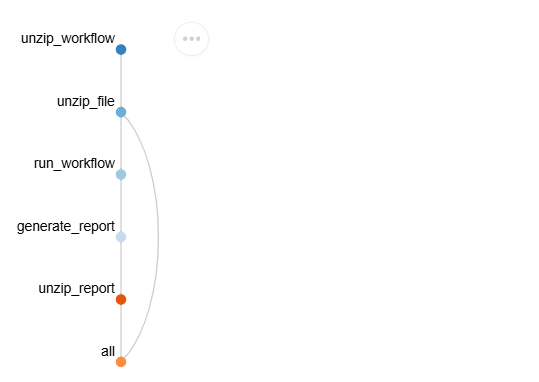
rule attribute#
input:
放入這個rule會用到的檔案(可以不用用到的都放，但放較好)，為達成workflow，會放入前一個rule的output來強調順序
路徑名需加 “ “
多個輸出以 , 分開 (ex: “report.zip” , directory(“data”))
有放在input的，在其他地方使用時，就可以用{input}取代，反之，若沒有，則得打出完整路徑(ex: workflow/Snakefile )，有多個input時，在其他地方按順在input的順序以{input[0]},{input[1]}…使用
指定rule的輸出為input: rules.rule_name,output
output:
放入這個rule會輸出的檔案(可以不用都放，但放較好)，為達成workflow，駛下一個rule可以靠的此rule的output建立順序
路徑名需加 “ “
多個輸出以 , 分開 (ex: “report.zip” , directory(“data”))
有放在output的，在其他地方使用時，就可以用{output}取代，反之，若沒有，則得打出完整路徑，有多個output時，在其他地方按順在output的順序以{output[0]},{output[1]}…使用
rule generate_report:
input:
rules.run_workflow.output
output:
"report.zip"
shell:
'''
snakemake -s workflow/Snakefile --report {output}
rm -rf {input}
'''
shell:
寫入所要執行的shell指令
單個指令用 “ “ (ex: “snakemake -s workflow/Snakefile –report {output}”)
多個指令用 ‘’’ ‘’’
指令與python程式碼都要用 “”” “”” 包住全部， 僅python_code要另外用 python -c “..python code.. “ 在包python程式碼 ，shell指令不用
rule data_update:
input:
rules.deploy.output[0],
rules.deploy.output[1]
output:
"workflow/new_snakefile"
shell:"""
python -c "
import re
# Read the file
/* more */
"
mv {input[0]} {output} # shell 指令
"""
run:
直接放入python程式碼，不用 “ “
加入shell指令用 shell(“/…shell command…/”)
run:
with open(input.report) as f:
report_content = f.read()
# 讀取 CSV 文件內容
csv_content1 = open(input.m_csv).read()
/* more */
script:
放入要執行的python_code_file
rule ebar_chart:
input:
"resource/tp-economy.csv"
output:
"result/bar/e-bar.html"
script:
"scripts/make_bar_chart.py"
log:
輸出日誌文件的路徑
路徑名需加” “
在shell的指令候用 … 2> {log} 完成
params:
傳遞額外的參數到 shell 指令或其他地方
以{param}使用
# toy example
params:
extra_params="--option1 value1 --option2 value2"
shell:
"process_data {input} {params.extra_params} > {output}"
threads: 和resources:
threads -> 規則所需的CPU數量
resources -> 規則所需的如內存、磁碟空間…
配置文件 (config.yaml)#
# config.yaml
samples:
A: data/samples/A.fastq
B: data/samples/B.fastq
C: data/samples/C.fastq
# Snakefile
def get_bwa_map_input_fastqs(wildcards):
return config["samples"][wildcards.sample]
rule bwa_map:
input:
"data/genome.fa",
get_bwa_map_input_fastqs
# "data/samples/{sample}.fastq"
output:
"mapped_reads/{sample}.bam"
params:
rg=r"@RG\tID:{sample}\tSM:{sample}"
log:
"logs/bwa_mem/{sample}.log"
threads: 8
shell:
"(bwa mem -R '{params.rg}' -t {threads} {input} | "
"samtools view -Sb - > {output}) 2> {log}"
configfile: "config.yaml" # config file 的路徑
/..more../
rule bcftools_call:
input:
fa="data/genome.fa",
bam=expand("sorted_reads/{sample}.sorted.bam", sample=config["samples"]),
bai=expand("sorted_reads/{sample}.sorted.bam.bai", sample=config["samples"])
/..more../
“config[“samples”][wildcards.sample]”取得 config 檔案裡sample下的路徑，在shell中使用{input}時會將三個路徑都當輸入跑一遍
{sample} 是通配符，會得到樣本名稱(不是路徑，所以
logs/bwa_mem/裡面是A,B,C的log檔)
bam=expand("sorted_reads/{sample}.sorted.bam", sample=config["samples"])會讓 bam = sorted_reads/{A,B,C}.sorted.bam 三個檔案，在shell用 {input.bam} 會三個檔案都跑
內建輸出#
輸出工作流程圖(DAG有向無環圖)
snakemake –dag **/target/** | dot -Tsvg > **/file_output_name/**.svg
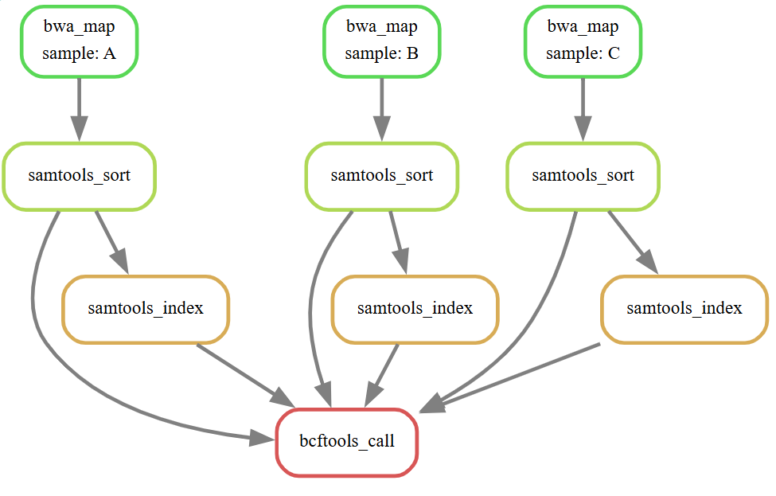
輸出report (內建workflow, statistics, about)
snakemake -s(op) **/target_snakefile/** –report **/report_name/** (.zip or .html …)
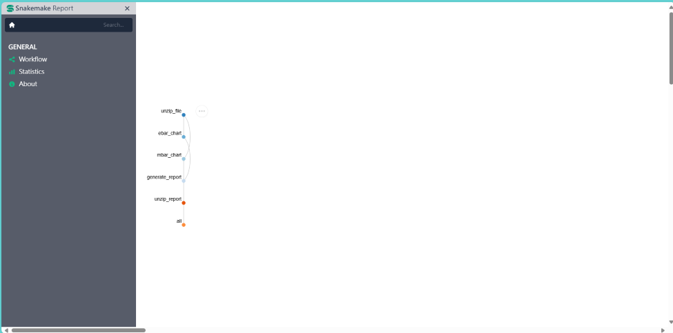
Snakemake參數#
-n (–dry-run) : 模擬試跑workflow(for debug) ex: $ snakemake -n
-p : 列出所有紀錄(for debug) ex:
$ snakemake -p-f (-F) : 強制重新跑完整workflow ex:
$ snakemake -f-n (-name): 指定名稱 ex:
$ conda env create -n example_env–file: 指定安裝環境 ex:
$ conda env create -n example_env –file environment.yaml-s : 指定跑的Snakefile ex:
$ snakemake -s new_snakefile –report report.html
III. 範例#
範例#
EX1: Data analysis of saccharomyces cerevisiae ( Brewer’s yeast)#
(credit to Catalog example)
(1) 作者在depositar上資料集放入script,Snakefile,測資, workflow.zip(optional)
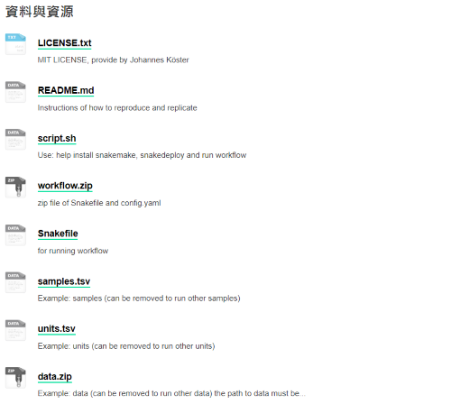
(2) 使用者在BinderHub中可將data.zip, sample, units更換為自己的資料，或是直接跑測試資料
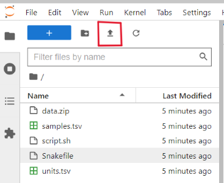
上傳資料
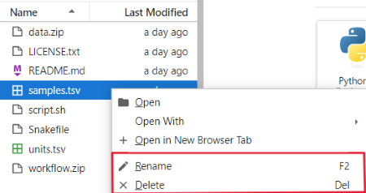
重新命名或刪除
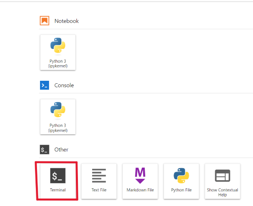
打開終端機
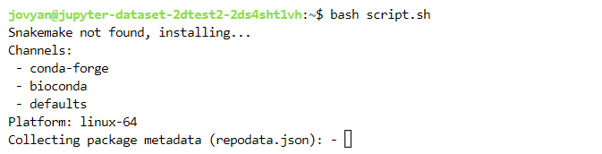
在終端機中輸入 $ bash script.sh
(3) Snakefile便會自動跑資料分析，並將結果從zip檔解壓縮成資料夾，使用者可在資料夾中的html檔中查看分析結果
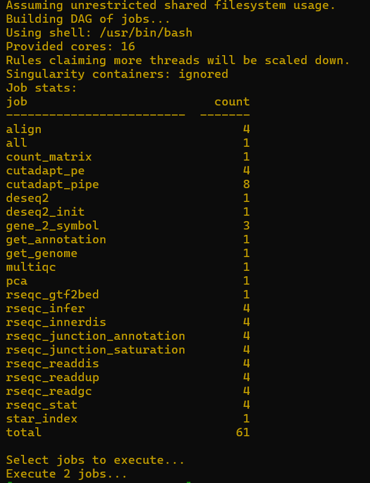
秀出要執行的工作
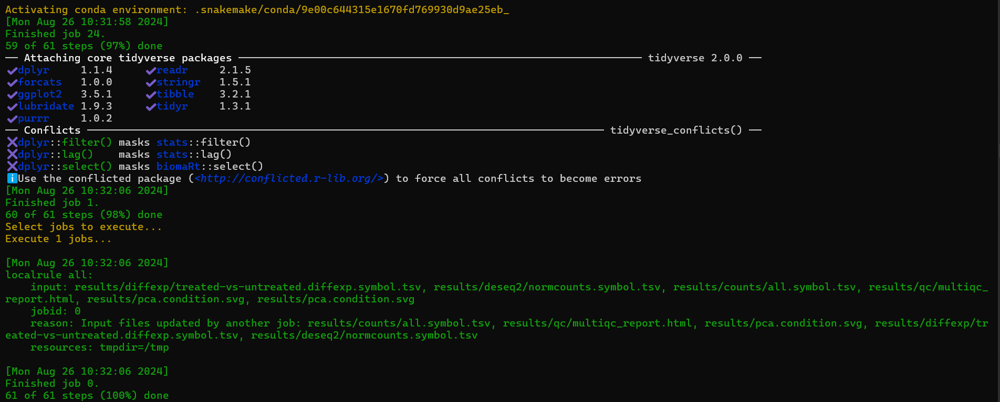
100% done
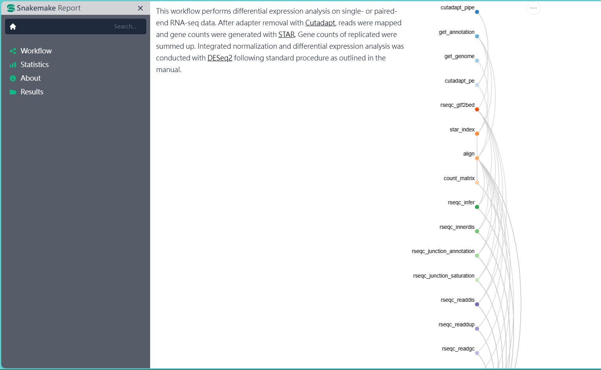
report的html檔
EX2: 台北市金價與結婚人數分析(以前面為提及過的內容為主)#
利用而外的pyhton code得到金價與結婚對數的bar chart
# make_bar_chart.py
import pandas as pd
import numpy as np
import plotly.graph_objects as go
# Access the input and output files from Snakemake
input_file = str(snakemake.input[0])
output_file = str(snakemake.output[0])
df = pd.read_csv(input_file)
if 'marriage' in input_file:
col1 = '結婚對數/總計[對]'
col2 = '年別'
layout_title = '台北結婚對數變化圖'
ytitle = '結婚對數/總計[對]'
markcolor = 'blue'
elif 'economy' in input_file:
col1 = '黃金[飾金]市價[元/臺錢]'
col2 = '年底別'
layout_title = '台北黃金市價變化圖'
ytitle = '黃金市價[元/臺錢]'
markcolor = 'gold'
bar = go.Bar(
x=df[col2],
y=df[col1],
marker=dict(color=markcolor)
)
layout = go.Layout(
title=layout_title,
title_font_size = 30,
xaxis=dict(title="年分"),
yaxis=dict(title=ytitle)
)
fig = go.Figure(data=bar, layout=layout)
fig.write_html(output_file)
在snakefile裡產生html檔
# Snakefile
/..more../
rule mbar_chart:
input:
"resource/tp-marriage.csv"
output:
"result/bar/m-bar.html"
script:
"scripts/make_bar_chart.py"
/..more../
rule custom_report:
/..more../
output:
"new_report.html",
"dag_graph.svg"
run:
# generate the DAG graph
shell("snakemake --dag | dot -Tsvg > {output[1]}")
# read report content
with open(input.report) as f:
report_content = f.read()
# read CSV file contents
with open(input.m_csv) as f1:
csv_content1 = f1.read()
with open(input.e_csv) as f2:
csv_content2 = f2.read()
# generate the new HTML content
new_content = f"""
<!DOCTYPE html>
<html>
<head>
<title>Report of the Relation Between Economy and Marriage</title>
</head>
<body>
<h1>Snakemake Report</h1>
/..more../
</body>
</html>
"""
# write the new report
with open(output[0], "w") as f:
f.write(new_content)
output 出 三個檔案
dag-graph
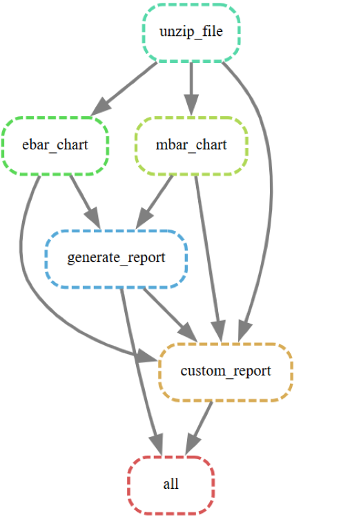new_report
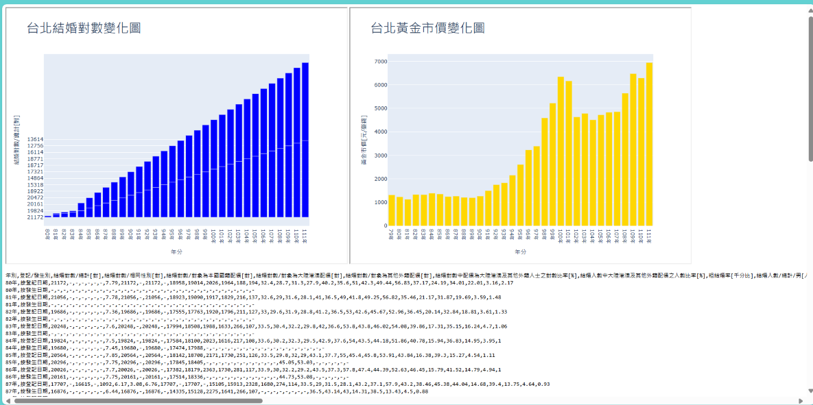report
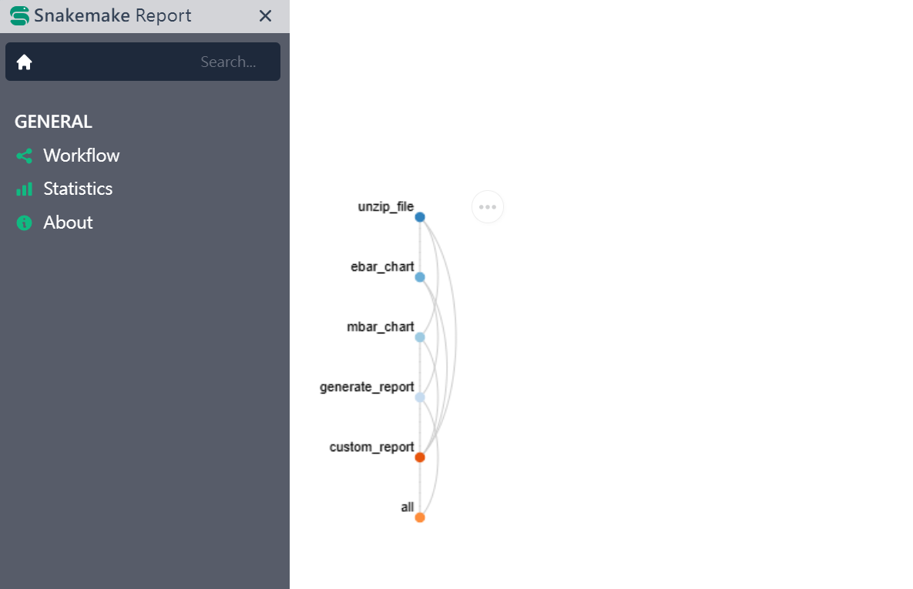
depositar:
+ snakemake paper report
+ ex1:Data analysis of saccharomyces cerevisiae ( Brewer’s yeast)
+ ex2: toy example-relation of gold price and marriage number
webpage link: https://hutakihare.github.io/2027AS-intern-snakemake/